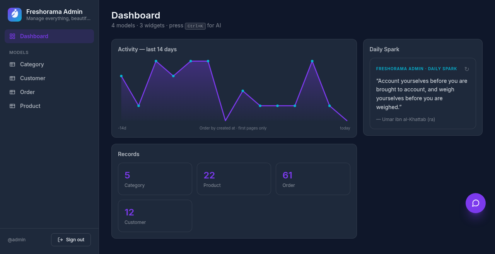
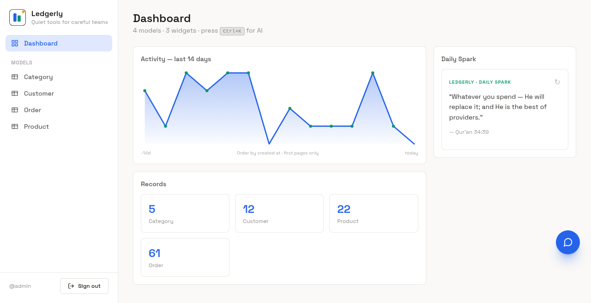
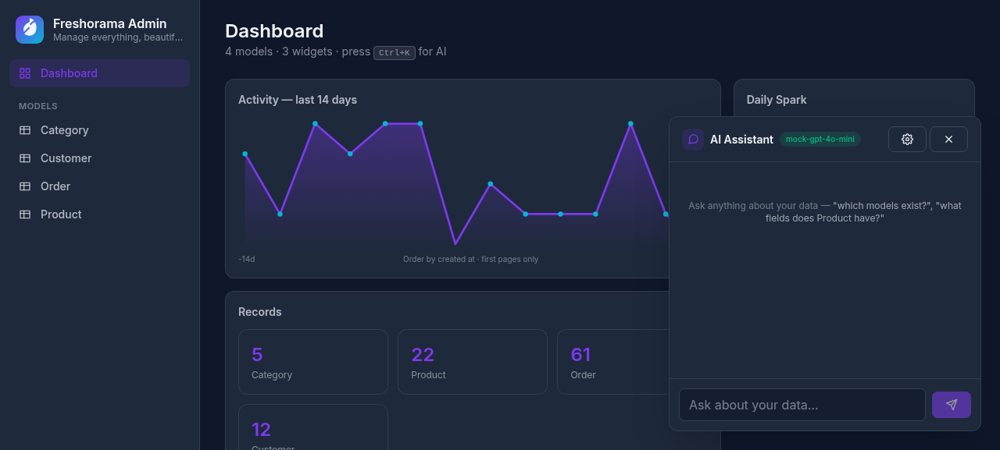

About this app
Admineverywhere is the back-office desktop app for the Freshorama team: one window for orders, catalog data, customer records, reports-style exports and the audit trail — everything the public website must never expose.
The app is a thin client: it signs in to the Freshorama API with your staff account and builds its screens directly from the API's published contract. That is why the app always matches what the server truly offers — there is no second, drifting copy of the data model. The back office lives only here: there is no admin website to visit, and no admin page on the public site. If you are reading this guide as a website link, the same document ships inside the app itself.
Install & first launch
- Get the installer from your team lead — the file is named like
admineverywhere_0.1.4_x64-setup.exe(Windows 64-bit). - Run the installer. If Windows SmartScreen shows a warning, choose More info → Run anyway — the app is signed internally and distributed by the team, not through the Store.
- Launch Freshorama Admin from the Start menu (the app family is also known as Admineverywhere). The window opens on the sign-in screen.
The installer upgrades in place: installing a newer version over an older one keeps your saved settings, widgets and dashboard layout.
Signing in
- Open the app. The API address is preconfigured to the Freshorama production server — leave it as it is.
- Enter your Freshorama username (or email or phone) and your password. All three forms of sign-in name are accepted.
- Press sign-in. The app exchanges your credentials for an access token and loads the working screens.
Your password is the same one you use for your Freshorama staff account. The app never shows or stores your password after sign-in; it keeps only the access token, and signing out clears it completely.

The screen map
The sidebar is the whole app. What you see depends on your roles (see Accounts & roles):
| Screen | What it is for |
|---|---|
| Dashboard | Your live overview: built-in and custom widgets in one grid. |
| Data pages (one per record type: Orders, Products, Customers, …) | Browse, search, create, edit and act on records — generated straight from the server's contract. |
| Modules | Self-documenting registry of every screen the app loaded, with a reason shown for anything your roles gate. |
| Activity | The append-only audit log of everything done through actions. |
| Widget Studio | Compose your own dashboard widgets and threshold alerts. |
| Notifications | The in-app notification center and the OS-toast switch. |
| Branding | Runtime look & feel (colors, font, logo) — restricted to manager roles. |
At the bottom of the sidebar sits the notification bell with an unread badge. Ctrl+K opens the AI assistant from anywhere.
Dashboard & widgets
The dashboard is a grid of widgets. Eight built-in fed widgets ship with the app:
| Widget | Shows |
|---|---|
| LiveOrders | Orders in the active window, updating on each feed tick |
| TodayRevenue | Revenue total for today |
| TrendArea | A filled trend line of a number over time |
| StatusDonut | Records split by status as a donut chart |
| LeaderBars | Top groups as ranked bars |
| HeatStrip | A strip heat-map of activity |
| DeltaChip | Now-vs-previous change on one number |
| CompletionGauge | Progress toward completion as a gauge |
Widgets refresh on a feed tick; a widget whose data source cannot be resolved shows a named reason instead of failing silently. Your own widgets — built in the Widget Studio — render in the same grid right after the built-ins.
Working with data (CRUD)
Every record type the server publishes gets its own page automatically. On any data page:
- Browse — records load in a table, newest first. Use the search box to filter (the server does the searching, so results are complete, not just what is on screen).
- Open — click a row to see the full record with all fields.
- Create — use the new-record button; the form fields follow exactly what the server accepts, including which fields are required.
- Edit / delete — from the open record or the row menu. Deletion asks for confirmation.
Because the forms are generated from the server contract, a field that the server rejects is rejected with the server's own message — the app never invents different validation rules.
Record & bulk actions
Beyond plain editing, data pages can carry actions — operations the server defines, such as flagging a suspicious order.
Record actions (one row)
Row-level action buttons appear on each record. An action that needs a note opens a small dialog: type the reason (it refuses to send empty), confirm, and the action fires. Whatever the server answers — success or a rejection — comes back as a clear message; a rejected action shows the server's reason, never a bare error code.
Bulk actions (many rows at once)
When a bulk action exists, a checkbox column appears in the table. Select the rows, press the bulk button, review the confirm dialog (with the reason field if the action uses one), and send. The server writes one audit entry per touched record, so every affected order's own history shows the batch effect.
Record history & audit
Open a record and press the history icon to see its story in two layers:
| Layer | Order | What it holds |
|---|---|---|
| Lifecycle trail | oldest first | Every status hop the record went through — a replay of its life |
| Audit entries | newest first | Everything done to it through actions: who, what, when, and the reason given |
The audit trail is append-only by construction — entries cannot be edited or deleted through the app or the API, and the recorded actor is always the signed-in account that performed the action, never a name typed into a form.
CSV & Excel export
Two export buttons live on data pages, and they answer two different questions:
| Export table | Full export | |
|---|---|---|
| Scope | The current page, the columns you see | The entire collection from the server |
| Shape | Exactly the table on screen | Line-level rows: child rows (e.g. order items) repeat their parent's ids, so the file regroups cleanly downstream |
| Search-aware | — (it is what you see) | Yes — the current search box filters the export |
| Needs server | No — instant, works offline | Yes — appears only when the server publishes an export endpoint |
Both produce the same byte-level format: RFC 4180 CSV, UTF-8 with BOM — files open cleanly in Excel on Windows without the codepage mess — and both guard against formula injection: a text cell that a spreadsheet would treat as a formula gets a safe leading apostrophe, while real numbers are never touched.
19.99 stays 19.99). Datetimes carry the
server's timezone format — sort and filter in Excel as text-safe ISO values.Widget Studio
Widget Studio (sidebar → Widget Studio) lets you compose custom widgets from the same eight fed types — no code, pure configuration:
- Pick a type — TrendArea, StatusDonut, LeaderBars, HeatStrip, DeltaChip, LiveOrders, TodayRevenue or CompletionGauge.
- Give it a title — your title shows on the dashboard card.
- Choose a size — sm (one grid cell) or lg (two cells wide).
- Choose an accent — a brand role (brand / accent / text), not a raw color: if the app is rebranded, your widget recolors itself with everything else.
- Point at data — pick the record type (a model, never a hand-typed URL) and what to watch: a count, a number field, a change (delta), a series, or groups. Unresolvable sources render a named reason on the card.
- Optionally add a threshold alert — see below.
Threshold alerts on any widget
| Mode | Fires when |
|---|---|
above | the number crosses above your value |
below | the number crosses below your value |
change | the number differs from the previous tick |
Alerts fire once on entering the hot state and stay quiet while it holds — no repeat spam. A fired alert lands in the same notification center as everything else (see Notifications).
Managing your widgets
- Up to 24 custom widgets; their order in the studio list is their dashboard order (swap neighbours to rearrange).
- Export / import your whole dashboard as one JSON text — all or nothing, so a broken paste can never half-apply. This is how you copy a dashboard between devices or teammates.
- Widgets persist per device; a malformed entry is dropped on load and can never break the dashboard.
Notifications
One center, three surfaces: the bell badge in the sidebar footer, the Notifications page (newest first, keeps the last 50), and optional OS toasts that pop even when the window is not focused.
- Open Notifications from the sidebar.
- Press the Enable row to ask the operating system for toast permission (on Android this is the system notification prompt).
- From then on, threshold alerts and events toast to the desktop — best-effort: if the OS refuses permission, the in-app center still records every event.
Manage the list with mark-read, mark-all-read and clear. Unread count drives the bell badge.
Activity log
The Activity screen is the whole audit trail, newest first — the triage view: the latest event on top. Filter by object type or object id to follow one record, or read it as the day's ledger.
Every entry records: the actor (always the signed-in account), the
action (e.g. order.flag), the target
(type + id), a human summary, the structured data the
action attached (e.g. the reason text), and the timestamp. Entries are immutable: the
screen reads, it never rewrites history.
Branding
The Branding screen (settings group; manager roles) edits the app's runtime identity: colors, corner radius, font and logo — a single brand definition that recolors everything, including custom widgets, on the next feed of the theme. Brand changes are stored against the server (staff-only to write), so a rebrand applies to the whole team, not just one device.
The app ships with neutral default branding and ready-made presets. If a color or the logo looks wrong after an update, re-open Branding and re-apply the Freshorama preset — and tell the owner, because it should not drift by itself.

AI assistant (Ctrl+K)
Press Ctrl+K (or the launcher button) anywhere to open the floating AI panel: ask about records, draft replies, summarize a customer's history — it streams the answer inline.
One-time setup — exactly three inputs
| Setting | What to enter |
|---|---|
| Base URL | An OpenAI-compatible chat endpoint — OpenAI, Groq, Ollama, LM Studio or Mistral all work on the same code path. Ask the owner which provider the team uses. |
| API key | Your key for that provider. Saving an empty key clears the stored one. |
| Model name | The model id the provider should serve. |
The panel keeps no history: close it and the conversation is gone — nothing about your records is stored by the assistant. If the chat errors, check the three settings first; a wrong base URL or key is the cause in almost every case.

Accounts & roles
What the sidebar shows you is driven by roles the server attaches to
your account (Django groups, e.g. managers, auditors):
- A page or button your roles do not cover is simply not shown — you will not stumble into someone else's tools.
- The Modules screen lists everything the app loaded, including rows
gated away from you, marked
gated · <roles>with no open button — so you always know what exists and what to ask for. - Superusers see everything, always.
Need a role change? Ask the owner/admin. Role grants come from the server's group membership, not from anything in this app.
Updating the app
- Watch the team chat for the release announcement — the version number in this guide's sidebar (v0.1.4) matches the build that carries it.
- Download the new
…-setup.exeand run it. It replaces the old version in place; your sign-in token, widgets and dashboard layout survive. - Re-open the app. The version is shown in this guide's sidebar and in the app's about area.
What is new in v0.1.4: this user guide now ships inside the app bundle — no external site needed — alongside the full v0.1.3 feature set (schema-driven CRUD, custom & bulk actions with audit, dual-layer CSV export, Widget Studio with threshold alerts, notification center, runtime branding, Ctrl+K assistant, role-aware navigation).
Troubleshooting
| Symptom | Meaning & fix |
|---|---|
| Sign-in fails with correct password | Your account may not be staff. Ask the owner/admin to check staff status. |
| Sign-in fails after typing a custom API address | Only the official Freshorama server is honored; a dead address typed earlier is dropped on upgrade. Clear the override field and restart. |
| A page or button is missing for me | Role gating. Check Modules — gated rows name the required roles. Request the role from the owner/admin. |
| An action returns a red message | That is the server's reason (e.g. missing reason text, unknown id). Read it, fix the input, retry. |
| Full export button absent | The server has not published an export action for that record type. Use Export table for the visible page meanwhile. |
| A widget shows a reason instead of data | Its data source does not resolve (model renamed or removed). Edit the widget in Widget Studio and re-point it. |
| No OS toasts | Notification permission not granted or unsupported. Enable it from the Notifications page; the in-app center always works. |
| AI panel errors | Check the three settings (base URL, API key, model). The assistant speaks OpenAI-compatible APIs only; an empty saved key means "clear the key". |
| Everything looks unstyled/wrong colors | Re-apply the Freshorama brand preset in Branding; report it if it drifts again. |
Anything else: message the team lead in the team chat with a screenshot and what you clicked — the audit trail on the server side will show the same action from the app's point of view.